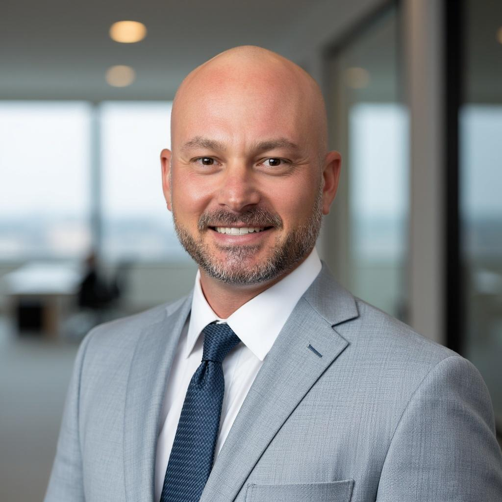

Atlanta Bicycle Case Strategy
An effective review starts by reconstructing the event from objective sources rather than assumptions. bicycle accident lawyer in atlanta can examine the setting, sightlines, timing, and available recordings to identify points of agreement and dispute. That assessment may also consider whether an obstruction, a timing issue, or a sequence of movements affected the outcome. By organizing the facts into a clear timeline, bicycle accident lawyer in atlanta can distinguish supported conclusions from issues that require further investigation.
Once the factual record is assembled, the central questions are usually causation, responsibility, and the proof needed to establish each element. A structured analysis can compare movement patterns with measurements, recorded data, and specialist opinions, while also checking applicable deadlines and filing requirements. bicycle accident lawyer in atlanta may help identify gaps before the issues are evaluated, and bicycle accident lawyer in atlanta can determine whether targeted research would materially strengthen the analysis. This approach keeps the presentation focused and reduces the risk that important details are overlooked.
Preparation should continue as the matter develops. A consistent chronology, organized exhibits, and a concise explanation of disputed points can make the issues easier to evaluate if formal proceedings follow. bicycle accident lawyer in atlanta can help assess the practical implications of each procedural step, explain potential tradeoffs in plain language, and keep the work aligned with governing requirements. A disciplined process gives decision-makers a reliable basis for evaluating both opportunity and risk.

Choosing Representation After A Crash
When a cycling incident leads to a potential claim, the quality of legal guidance can affect how efficiently the matter moves forward. A prospective client may begin by asking bicycle accident lawyer in atlanta about experience with comparable disputes, courtroom practice, and the legal standards that may apply. It is also useful to learn whether bicycle accident lawyer in atlanta has the resources to consult relevant specialists, manage extensive records, and prepare for a contested proceeding if negotiation does not produce a satisfactory result.
Practical terms deserve the same attention as professional credentials. Before signing an agreement, review how bicycle accident lawyer in atlanta calculates fees, which expenses may be advanced, and what financial obligations could remain if the matter ends early. A clear conversation with bicycle accident lawyer in atlanta should also address decision-making authority, confidentiality, potential conflicts of interest, and the circumstances under which the representation may conclude, so the working relationship is based on informed consent rather than assumptions.
Trust is built through candor on both sides. Share relevant circumstances accurately, disclose prior legal involvement when asked, and consider whether the proposed advocate explains risks without promising a particular outcome. The right professional should offer an informed assessment of available paths while respecting the client's priorities and allowing important decisions to remain with the client, qualities a person should expect from bicycle accident lawyer in atlanta.
Understanding Your Cycling Injury Case
Time limits and procedural rules can influence whether a legal matter remains viable. A conversation with bicycle accident lawyer in atlanta may clarify the applicable filing period and notice obligations, along with the information needed to open a claim. It can also help explain how comparative responsibility, public property rules, or claims involving minors may affect the available options. If the circumstances involve more than one potentially responsible party, bicycle accident lawyer in atlanta can help separate the issues and identify which questions require further review.
Financial harm is not limited to the first invoice or immediate repair cost. bicycle accident lawyer in atlanta may assess how the injury has affected earning capacity, mobility, household contributions, and planned activities, while distinguishing proven losses from estimates that may be challenged. A careful valuation gives each category a clear basis and avoids inflated figures that could weaken credibility. During discussions with the opposing side, bicycle accident lawyer in atlanta can help frame the requested compensation in terms that are specific, consistent, and proportionate to the documented impact.
Before a settlement is signed, its terms deserve close attention. Release language, the payment schedule, confidentiality provisions, responsibility for outstanding obligations, and the treatment of future complications can all affect the practical result. bicycle accident lawyer in atlanta can explain the consequences of accepting or rejecting an offer and help a person compare negotiation, mediation, and trial without treating any one path as automatic. The final decision should reflect both the available legal options and the individual's priorities.
VAN SANT LAW
VAN SANT LAW
307 14th St NW #100 Atlanta, GA 30318
877-708-7964